LayerSlider
3D
demo slider
 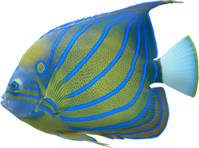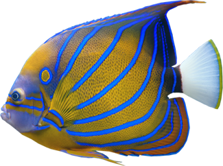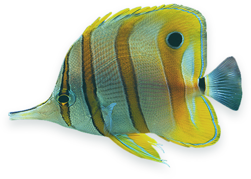
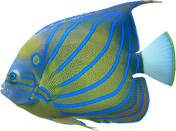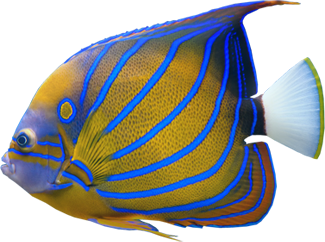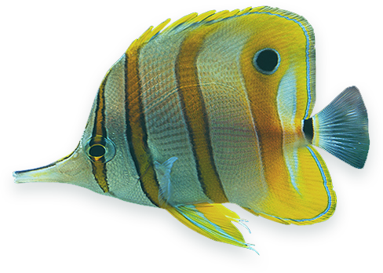


200+ 2D & 3D transitions with Transition Builder!
Use with any HTML content including embedded videos!
Responsive with Smart Resize & Touch-enabled!
Multisite, Multi-language & Localization ready!
 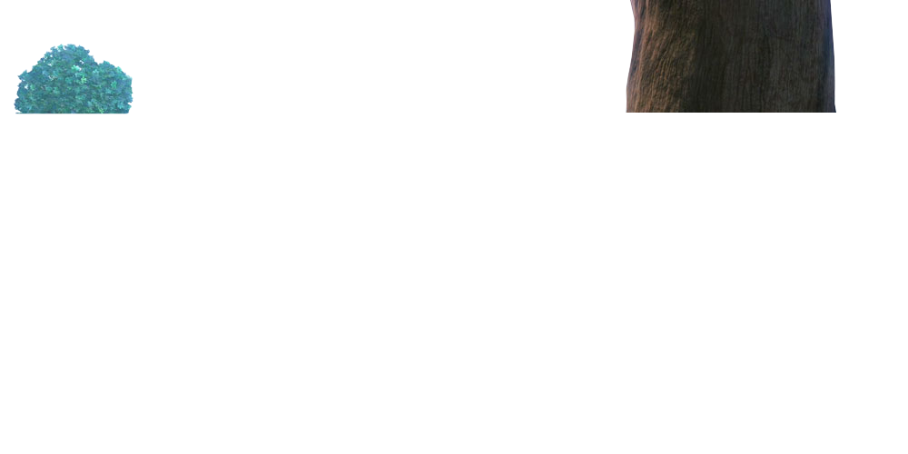
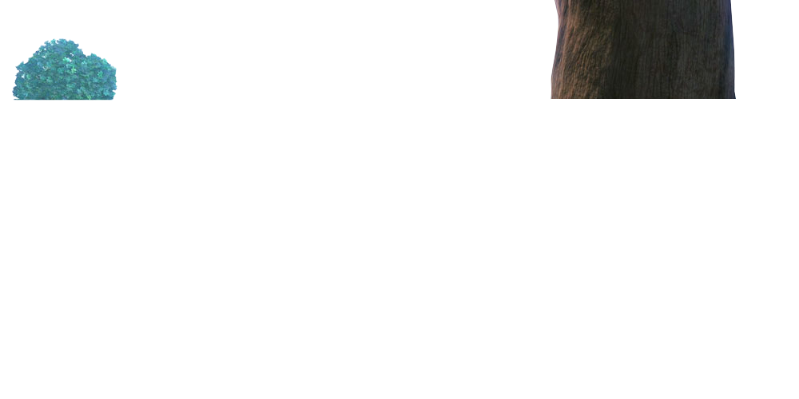